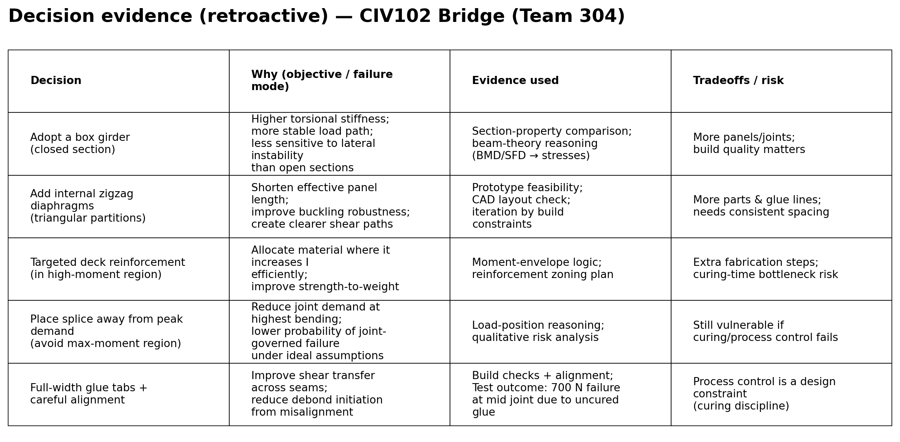
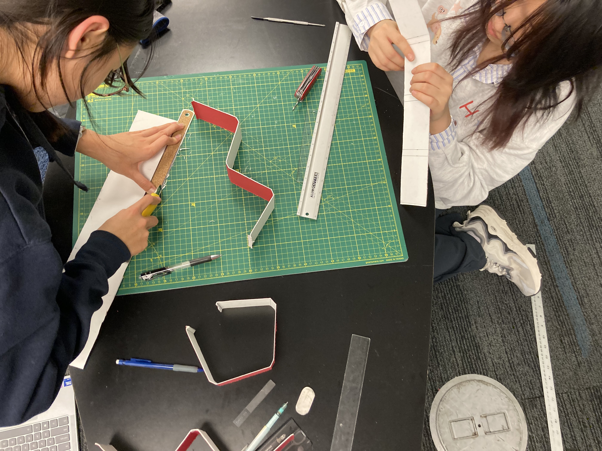

Table of contents
Concise structure, dense captions, and traceable evidence.
1) Context & overview
Explain the project to a reader who has never taken the course.
This bridge challenge required our team to design and build a mat-board structure spanning 1200 mm using contact cement. The goal was not only to achieve a high peak load, but to make our reasoning legible: connect mechanics (bending, shear, buckling, joints) to design choices, then validate the prediction through a physical test.
- Objectives: meet span and geometry constraints; reach at least 400 N; maximize strength-to-weight; provide a defensible prediction of failure load and failure mode.
- Constraints: restricted materials, strict deck/interface geometry, and fabrication realities (alignment and curing discipline) that affect capacity.
- Stakeholders: teaching team (constraints and grading), our team (performance and learning), and external readers (clear evidence trail and professional communication).
2) Deliverables
PDFs are stored under projects/assets/docs/.
3) Teammate credits
Our team value emphasized shared ownership: everyone participated across analysis, design, fabrication, and testing. To keep coordination manageable, one person hosted each phase while the others contributed hands-on support and cross-checking.
- Shupei Zhang (me): hosted bridge design direction and prototype testing; coordinated iteration logic; contributed to fabrication and documentation.
- Jingshu Zhu: hosted CAD and MATLAB numerical calculations; co-authored the report; contributed to fabrication and test-day work.
- Youyang (Mina) Wu: hosted report drafting/synthesis and documentation; contributed to design discussions and fabrication/test work.
4) Process interpretation & retroactive analysis
Re-frame CIV102 actions using a design-process lens: frame → explore → converge → represent.
Framing
We framed the bridge as a competition between failure modes rather than a single “strength” number. The practical question was: “What is most likely to govern first under real imperfections?” This pushed us to treat joints and plate buckling as first-class constraints, not afterthoughts.
Exploring
Our exploration combined parameter-based reasoning (section properties, likely buckling panels, weight budgeting) with feasibility checks through prototypes. We treated prototypes as hypothesis tests: validate whether a proposed internal structure can be assembled accurately, whether glue tabs align cleanly, and whether thin plates begin to show early instability when loaded.
Converging
We converged to a closed box-girder shell reinforced with internal zigzag diaphragms. This choice supports a stable load path and improves robustness by subdividing large plate panels. We also used material placement as a budget: reinforce where the bending demand is highest rather than thickening everything uniformly.
Prediction vs test
- Predicted peak load: 1200 N (critical region: mid-span / mid joint)
- Tested peak load: 700 N
- Observed failure: the mid-span glued connection opened because the adhesive had not fully cured, causing the bridge to split.
5) Decision evidence snapshot
A compact artifact that makes our convergence traceable.
This table summarizes the decisions that shaped the final bridge. It serves as a compact decision record: each feature is paired with the mechanical reason it exists, the evidence we relied on, and the tradeoff it introduced. The goal is clarity: an external reader should be able to reconstruct why the final design looks the way it does.

Figure — Decision evidence. Decision → rationale → evidence → tradeoffs. This links the narrative to a concrete record.
6) CTMF assessments
Explain how each CTMF was used, evaluate utility/fit, and state when to use or avoid it.
CTMF 1 — Mathematical modeling
How we used it: We used beam-theory reasoning and section-property calculations to connect loads to stress demand, then compared likely failure modes (bending stress, buckling susceptibility, and joint sensitivity) to guide geometry and reinforcement choices.
Utility: Modeling enabled fast iteration and made tradeoffs explicit. It helped us justify why reinforcement should be placed where it changes stiffness most, rather than distributed uniformly.
Limitations: The model assumes ideal bonds and consistent fabrication quality. In reality, adhesive curing and alignment errors can dominate capacity.
When to use / avoid: Use modeling early to eliminate dominated concepts and justify targeted reinforcement. Avoid treating it as final truth without validating joints and process constraints.
CTMF 2 — Prototyping and testing
How we used it: We built prototypes and partial assemblies to test feasibility and risk: diaphragm layout, tab alignment, and whether glue seams remain stable under handling.
Utility: Prototyping exposes the “hidden variables” that models cannot reliably capture: imperfections, curing behavior, and error accumulation during assembly.
Limitations: Prototypes consume time and can produce noisy results if the test is not planned. Without a hypothesis-first mindset, it becomes just “building more stuff.”
When to use / avoid: Use targeted prototypes to test the riskiest assumption first (often joints). Avoid full-scale rebuilds until you have isolated the variable you are testing.
CTMF 3 — Decision matrix / decision record
How we used it: We compared candidate design directions using criteria that matter in lightweight structures: predicted governing mode, weight penalty, fabrication risk, and credibility of prediction. The “Decision evidence” table is a compact decision record derived from that process.
Utility: It turns a debate into a traceable choice. It also forces explicit acknowledgment of process risk (curing time, alignment, glue seams).
Limitations: Any scoring can become arbitrary if criteria are vague or weights are not justified.
When to use / avoid: Use when multiple plausible directions exist and time is limited. Avoid it until you can define criteria that reflect the actual failure drivers.
CTMF 4 — Toulmin-style argument structure
How we used it: We can represent our decision as a structured argument: claim (this design is robust), evidence (analysis and prototype observations), warrant (subdivision reduces buckling sensitivity; closed section stabilizes load paths), and rebuttal (process control can dominate joint reliability).
Utility: It improves clarity and exposes missing evidence. It is especially useful when explaining why a test result differs from a prediction.
Limitations: If evidence is thin, the structure reveals gaps immediately; it cannot substitute for real data.
When to use / avoid: Use for one-page summaries and failure analysis. Avoid using it as “template filling” without concrete evidence.
7) Final test media
The final test anchors the narrative: prediction, observation, and process reality.
The final test reached 700 N before the mid-span glued connection opened. The evidence below is included to keep the story accountable: it connects the written claim to observable reality.

projects/assets/img/test-final-01-photo.jpg if you want a still image.
Video — Final test loading sequence. Observed failure initiated at the mid-span glue joint due to insufficient curing time.
8) Interactive 3D model
Drag to rotate · Scroll to zoom · Right-drag / two-finger to pan.
C toggle cutaway · R reset view.
9) Work photos
Build photos serve as process evidence: alignment, sequencing, and the reality of joints.



10) Position reflection annotation
How this project expressed — and reshaped — my design position.
My design position is that engineering reasoning only becomes trustworthy when it stays inside a feedback loop with reality: models are not the conclusion — they are hypotheses that must be stress-tested by evidence. CIV102 made this principle tangible. We predicted 1200 N and identified the mid-span joint region as critical, yet the bridge failed at 700 N because the adhesive had not fully cured. The location aligned with our concern, but the mechanism was dominated by process control rather than purely by section stress or buckling capacity.
This outcome also exposed a leadership and management lesson. Our division-of-labor philosophy was careful and stable: we aimed for shared ownership so that each teammate would participate in every phase (analysis, design, fabrication, testing) and understand the full system. That approach improved cross-checking and reduced single-point knowledge failures — but it also reduced efficiency. In practice, our pace slipped, and we did not complete the build early enough to allow curing time to reach the required maturity. The result was not simply “lower strength”; it was a structural capacity penalty caused by a schedule mistake.
This reframed “time management” as an engineering variable. In a lightweight structure where joints and adhesives can govern, curing time is effectively part of the design specification. If a design depends on seam shear transfer, then the critical path is not only geometry and analysis — it is the build sequence, curing windows, and verification checkpoints. In other words, the bridge was a coupled system: structure, materials, and process were inseparable, and failure emerged from their interaction.
What I would do differently next time
- Plan the critical path explicitly: schedule backward from a 72-hour curing requirement and protect that buffer.
- Parallelize work with clear phase ownership: keep shared participation, but assign a single “phase lead” with decision authority and a time box.
- Introduce build gate checks: pre-glue dry-fit inspection; post-glue alignment verification; “do not proceed” criteria if a seam is questionable.
- Prototype the joint early: treat seam performance as a first-class test object, not a detail at the end of fabrication.
In portfolio terms, this project strengthened my commitment to evidence-first design. I want my engineering work to be legible: a reader should be able to trace a line from assumptions → decisions → artifacts → tests → updated beliefs. CIV102 reminded me that the most important design decisions are sometimes not geometric at all — they are process decisions that determine whether a structure can realize its modeled capacity.
11) References
Course documents and project records used to support claims on this page.
- CIV102 Bridge Design Project Handout: CIV102-2025F-BDP-Handout-v2.pdf →
- Team 304 Design Report: CIV102 Project Team 304 Design Report.pdf →